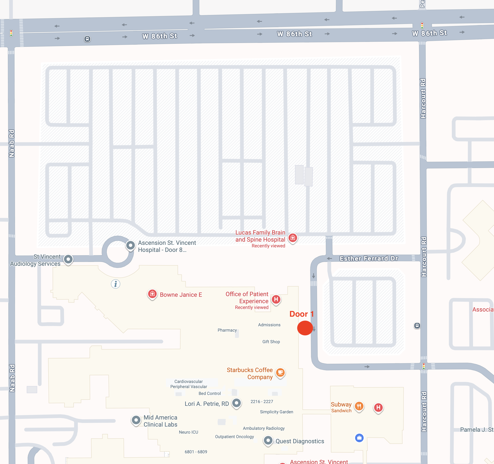

Gastroenterología
Pediátrica
(317) 338-9450

St. Vincent — 86th St., Puerta #1
Cómo Llegar
La Puerta #1 está en Esther Ferrand Dr., en el lado este del campus del hospital. Hay valet parking gratuito disponible en la puerta (zona de descenso techada con un letrero azul "1").
Acceso más fácil: entre a Esther Ferrand Dr. desde Harcourt Rd. (lado este). Una ruta un poco más larga desde Naab Rd. (lado oeste) recorre el campus del hospital.

La Puerta #1 está marcada en rojo. El estacionamiento grande de cirugía está al otro lado de Esther Ferrand Dr. — pase por debajo de la zona techada para valet, o estacione en el lote y camine hasta la puerta.

Busque la zona de descenso techada con el letrero azul "1". El puesto de valet está justo en la puerta.
Desde W 86th St., gire al SUR en Harcourt Rd. Después de aproximadamente 2 cuadras, gire a la DERECHA (OESTE) en Esther Ferrand Dr. La entrada techada de la Puerta #1 con el letrero azul "1" está inmediatamente a su IZQUIERDA. Pase por debajo del techo para que el valet tome el auto, o continúe y estacione en el estacionamiento de cirugía a su derecha.
Desde W 86th St., gire al SUR en Naab Rd. Entre al campus del hospital, siga el circuito (pasando el redondel cerca de St. Vincent Audiology) y continúe hacia el este por el frente del hospital. Esther Ferrand Dr. corre por el lado este del edificio — la Puerta #1 está en el extremo sur de esa avenida, a su DERECHA mientras avanza hacia el sur. El valet está en la puerta.
Si termina en W 86th St. yendo hacia el oeste pasando Naab Rd., o en Harcourt Rd. yendo al sur pasando Esther Ferrand Dr., dé la vuelta. El campus del hospital está delimitado por W 86th St. (norte), Naab Rd. (oeste) y Harcourt Rd. (este).
Si se pierde o llega tarde, llame directamente a Preop Pediátrico: (317) 338-5851. Para otras preguntas sobre el procedimiento de su niño, llame a nuestra oficina al (317) 338-9450.